Skaff deg desse blokkene før du begynner:
Viss du vil ha dekorasjon, så kan du ta med ein sjøllaget banner. Du kan også bruke mosegrodd og spurket murstein for å få det til å sjå gamlare ut.
Begynn med å lage ein 9x2 blokker lang murstein platform.
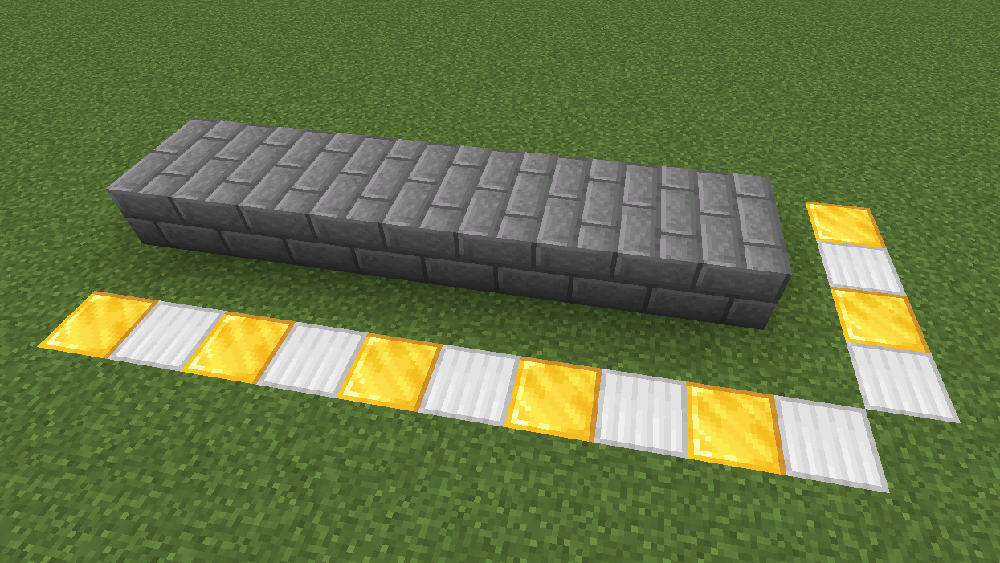Legg til ein til rad med murstein på baksiden.
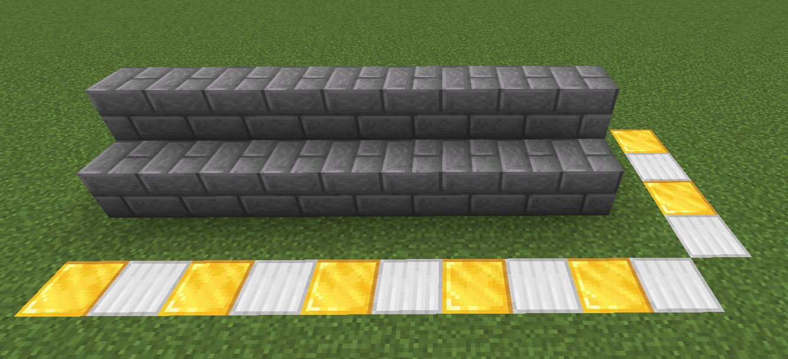Plasser murstein først og så mursteintrapper etterpå. Gjør dette langs heile den tomme raden.
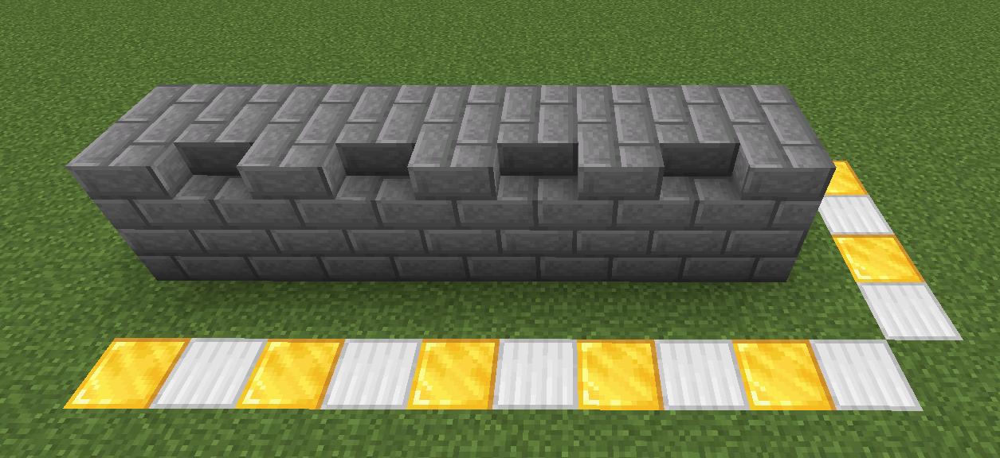Plasser annen kvar ein murstein på begge radene. Begynn slik at ingen mursteintrapper får ein blokk over seg.
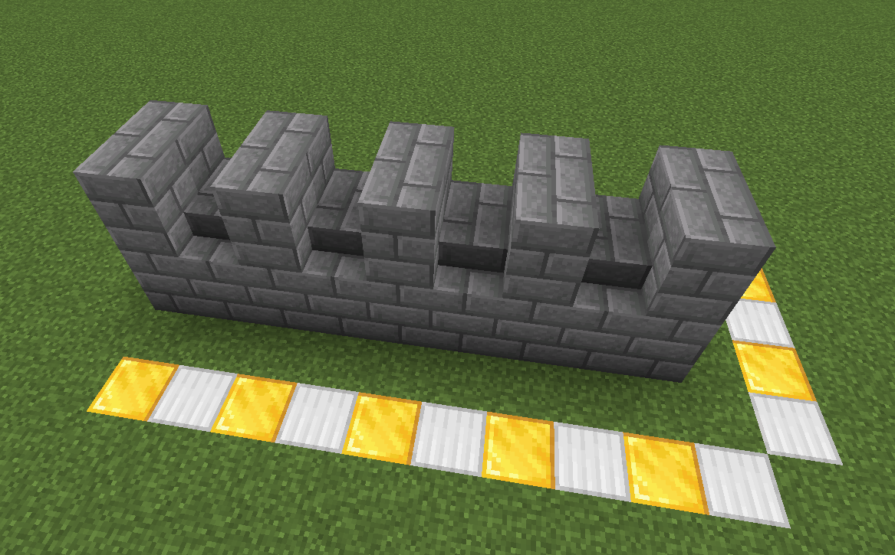Plasser glowstone, bakerst i åpenromma. Plasser deretter murstein over heile bakerste rad.
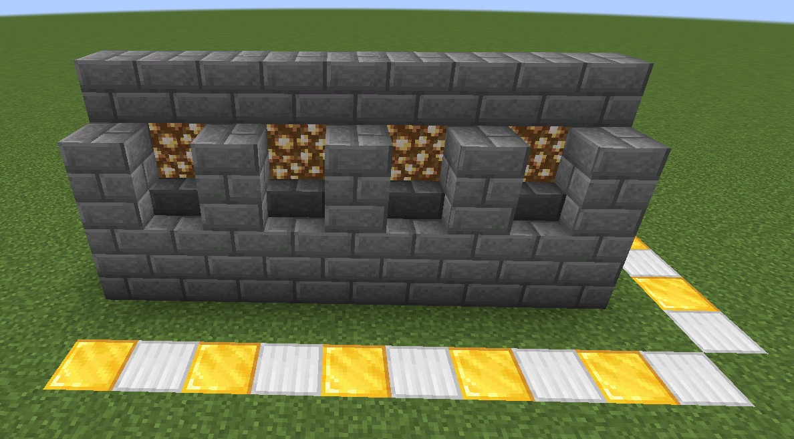Plasser oppned mursteintrapper på blokken over glowstonen, på framerste rad. Plasser deretter annen kvar med murstein på samme rad.
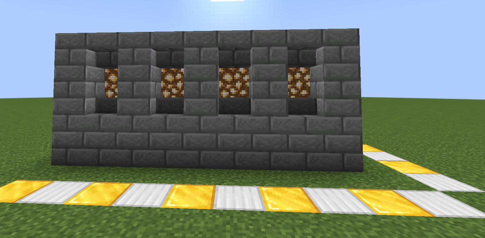Plasser annenkvar med finpussa andesitt helle og finpussa andesitt på fremste rad. Begynn med finpussa andesitt helle.

Plasser granplanker på bakerste rad.
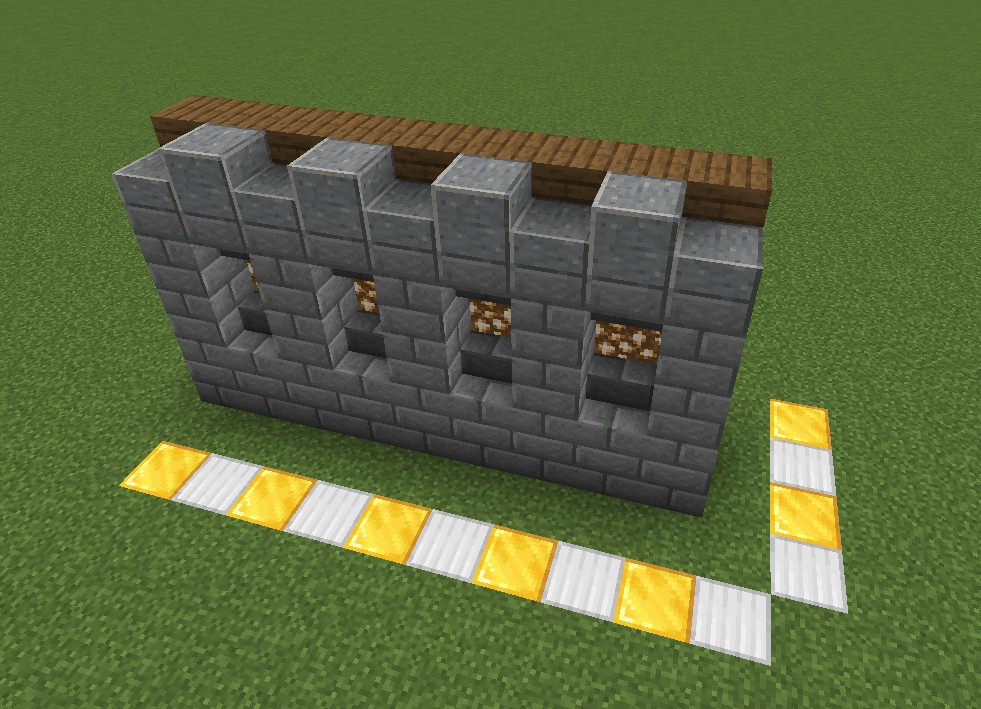Plasser stein oppå begge radene.
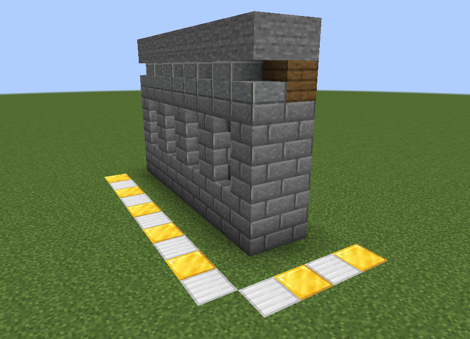Plasser annen kvar med grantrapper først, og deretter granplanker bak på bakerste rad. Plasser grangjerde oppå dette.
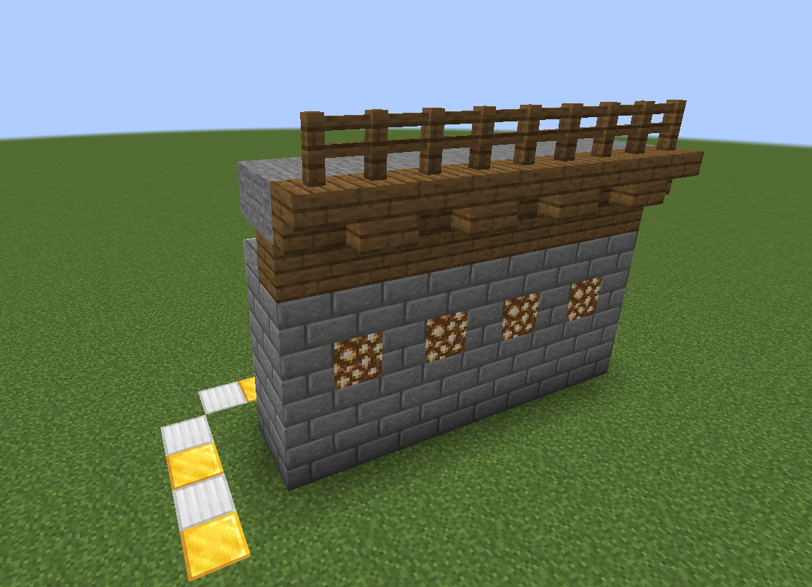Plasser grangjerde under granplankene, og oppned mursteintrapper under grangjerdene.
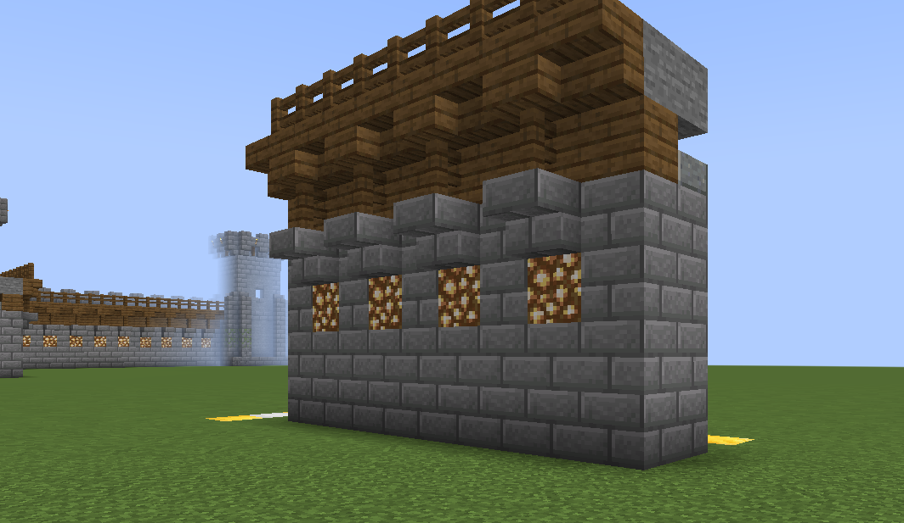Plasser oppned mursteintrapper framme på frammerste rad.
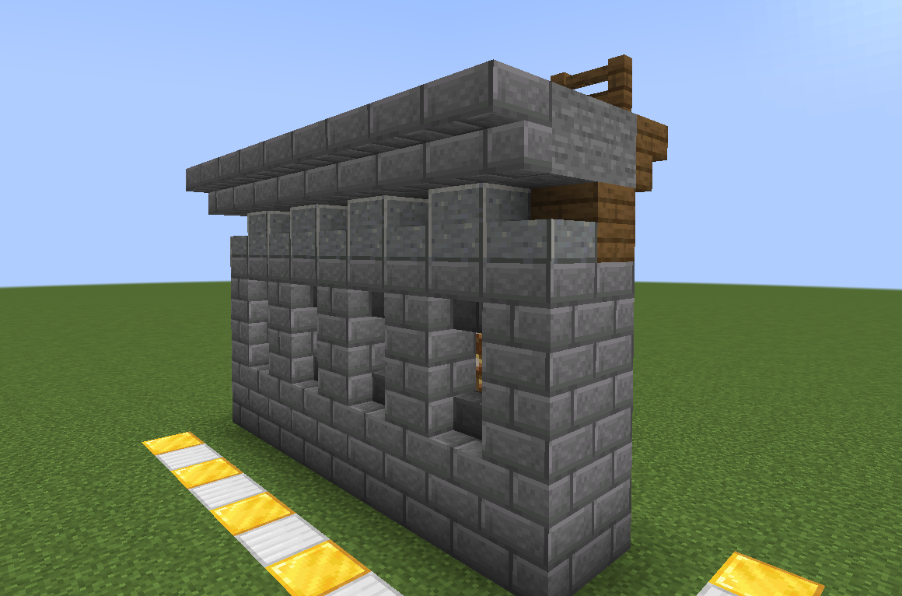Plasser første mursteintrapper oppå dei oppned mursteintrappene. Plasser ved siden av murstein med ein mursteinhelle på toppen.
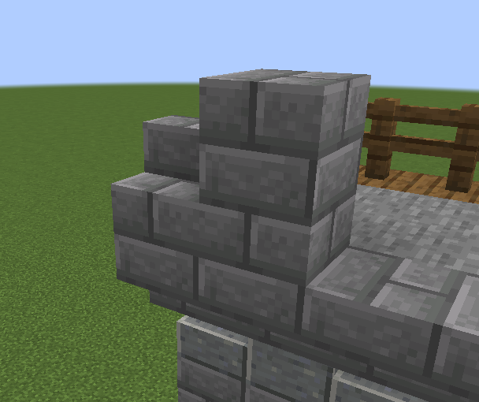Bygg det du akkurat bygde, videre på heile raden. Vist du vill så kan du koble til muren på tårnet ditt!
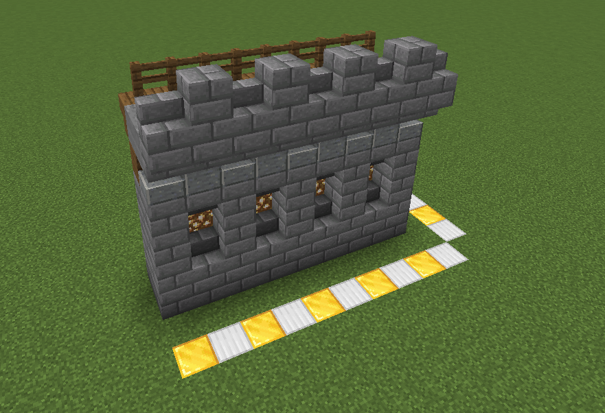Du har nå gjort ferdig byggverket ditt! Gratulerer!
Du kan plassere bannere slik som dette, for å få det til ikkje å være så tomt.
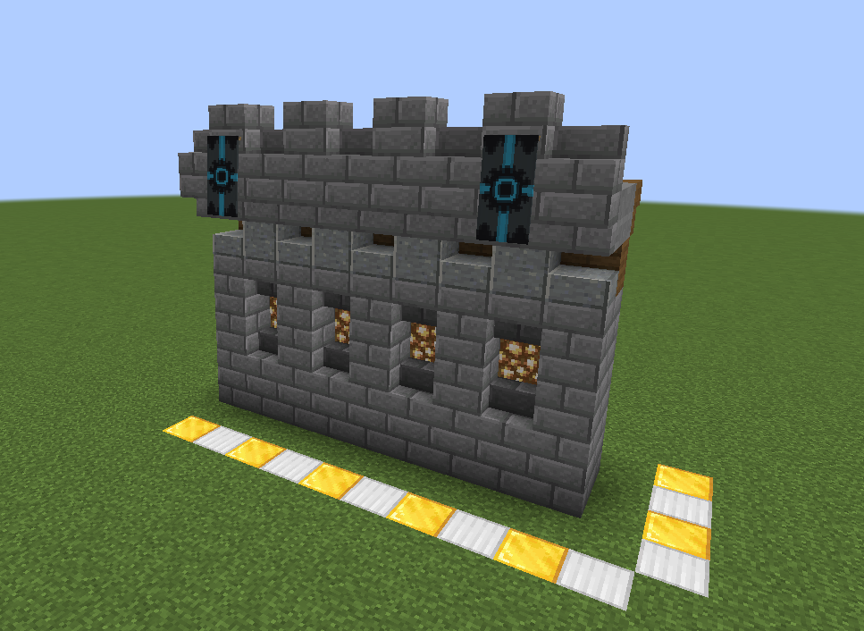Du kan plassere mosegrodd murstein og sprukken murstein slik som dette for å få det til å sjå gammelt ut. Husk å ikkje bruke for masse!
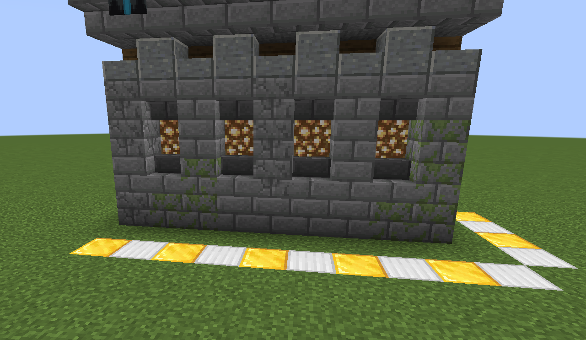Takk for at du tokk deg tid til å fullføre denne oppskriften!
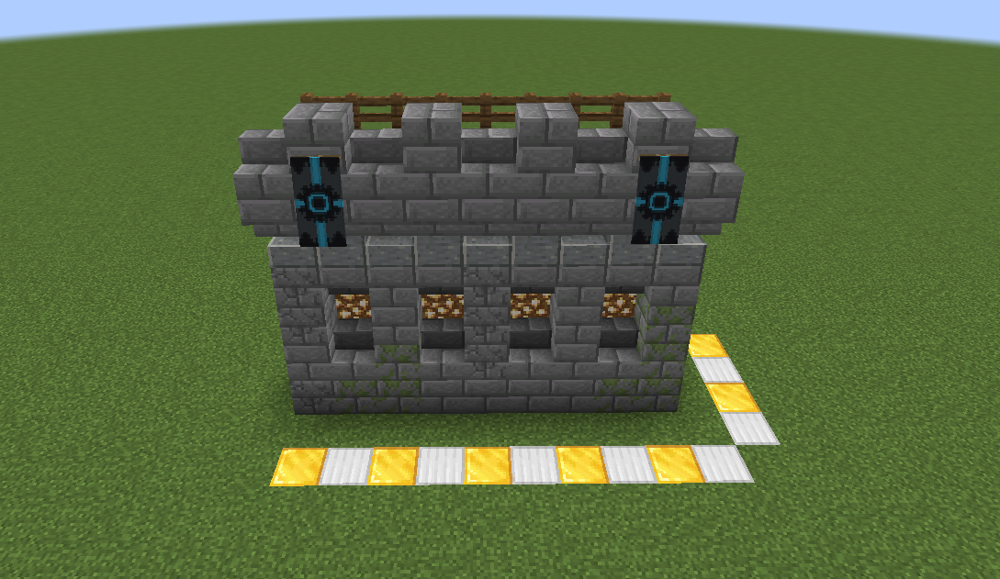